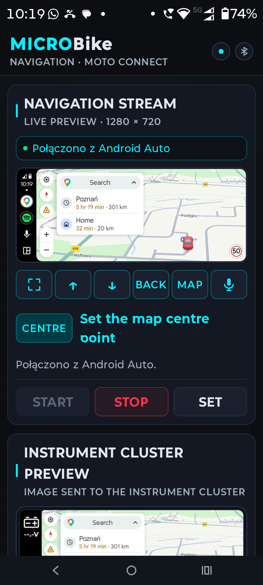
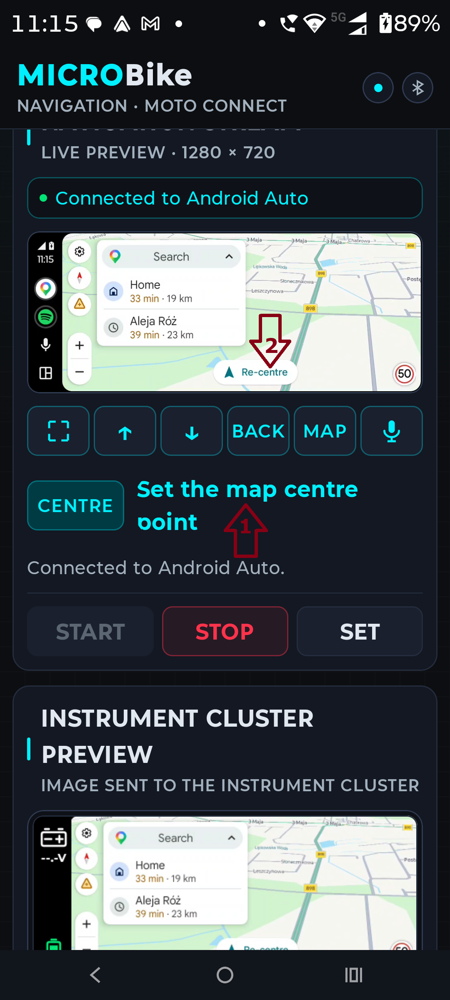
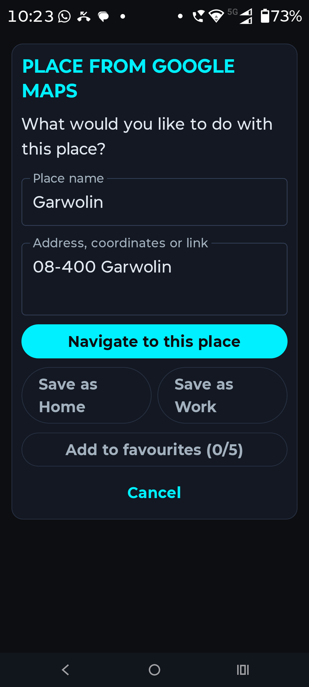

Parte 1 · Avvio rapido
1. Requisiti, primo avvio e autorizzazioni
Per iniziare ti servono:
- Uno smartphone con Android 12 o successivo (API 31+).
- Android Auto installato e attivo (già integrato nella maggior parte dei telefoni recenti).
- L’app MICROBike installata.
- Yamaha NMAX 125 Tech Max (2025/2026) con modulo YCCU / Garmin CCU. Puoi comunque provare l’anteprima di Android Auto sul telefono anche a casa, senza scooter né Bluetooth.
Sicurezza prima di tutto: esegui configurazione, abbinamento Bluetooth e calibrazione del punto di centratura sempre a veicolo fermo.
Nota sulla lingua dell’app: al momento l’interfaccia di MICROBike è disponibile in inglese e polacco (altre lingue arriveranno in seguito). In questa guida trovi quindi i nomi dei pulsanti in italiano con il corrispondente testo inglese tra parentesi.
- Accetta la schermata iniziale. Al primo avvio leggi le avvertenze di sicurezza (Important information before riding) e tocca I understand and accept.
- Completa la procedura guidata delle autorizzazioni (App permissions). Puoi concedere subito ogni permesso oppure saltarlo con Skip e modificarlo in seguito:
- Dispositivi nelle vicinanze (Nearby devices) per il quadro — necessario per trovare e collegare il modulo YCCU e leggere la tensione della batteria.
- Posizione precisa (GPS) (Precise location) consigliata — abilita velocità GPS per Android Auto, statistiche di guida, tema giorno/notte automatico e modalità MENU da fermo.
- Notifiche MICROBike Android 13+ — mostra le notifiche di Bluetooth e GPS con i pulsanti di arresto rapido.
- Stato telefono (Phone state) e Accesso alle notifiche (OSD) opzionali — mostrano nome del chiamante, durata della chiamata e titolo del brano sul display TFT.
- Mostra sopra altre app (Display over other apps) opzionale — consente di avviare percorsi dal menu del quadro (Casa, Lavoro, Preferiti) quando MICROBike è in background.

images/01-ekran-powitalny.png
Schermata iniziale con le avvertenze di sicurezza e il pulsante di accettazione.

images/02-uprawnienia-kreator.png
Procedura guidata “App permissions” (passo 1 di 6 — Nearby devices).
2. Attivare il server sviluppatore di Android Auto
MICROBike riceve il flusso video direttamente dal server locale integrato in Android Auto sul telefono. La modalità sviluppatore di Android Auto si abilita una sola volta; il server dell’unità principale va invece avviato prima di partire se è stato fermato o dopo il riavvio del telefono.
- Apri le impostazioni di Android Auto da MICROBike. Nella scheda superiore NAVIGATION STREAM tocca SET. Se Android Auto non è installato, tocca prima Open Google Play.
- Sblocca la modalità sviluppatore (una sola volta). Scorri fino in fondo alle impostazioni di Android Auto e tocca 10 volte su «Versione» (Version).
- Conferma la finestra di dialogo. Quando viene chiesto «Consentire le impostazioni sviluppatore?», tocca OK.
- Avvia il server unità principale. Tocca il menu ⋮ in alto a destra e scegli Avvia server unità principale (Start head unit server). Apparirà una notifica di sistema che conferma l’avvio del server.
- Torna in MICROBike. L’app rileva il server e si collega automaticamente (l’indicatore nell’intestazione diventa ciano e compare l’anteprima della mappa). Se avevi interrotto manualmente la proiezione, tocca START.

images/03-aa-przycisk-set.png
Scheda “NAVIGATION STREAM” con il pulsante SET in basso.

images/04-aa-ustawienia-wersja.png
Impostazioni Android Auto in fondo alla pagina: voce “Versione / Version” (10 tocchi).

images/05-aa-tryb-programisty.png
Finestra di dialogo Android Auto per consentire le impostazioni sviluppatore (OK).

images/06-aa-uruchom-serwer.png
Menu ⋮ in alto a destra con “Avvia server unità principale / Start head unit server”.

images/07-aa-podglad-live.png
Ritorno a MICROBike con la mappa Android Auto attiva in anteprima.
Buono a sapersi: il server Android Auto comunica solo localmente dentro il telefono (127.0.0.1) e non richiede alcun cavo USB.
Documentazione ufficiale Google sul server unità principale Android Auto
3. Abbinamento e connessione al quadro Yamaha
- Abbina lo scooter nelle impostazioni Android. Accendi il quadro dello scooter e il Bluetooth sul telefono. Nelle impostazioni Bluetooth di Android abbina il modulo il cui nome inizia con YCCU.
- Chiudi le app concorrenti. Chiudi StreetCross (e Yamaha MyRide se usi il monitoraggio della batteria), perché il quadro gestisce un solo collegamento di navigazione alla volta.
- Aggiungi il veicolo in MICROBike. Nella scheda MOTO CONNECT tocca + Add vehicle. La scansione dei moduli YCCU dura fino a 15 secondi.
- Seleziona lo YCCU rilevato. Il veicolo viene salvato (fino a 3 veicoli) e MICROBike si connette subito.
- Controlla il display TFT. Dopo l’autenticazione appare la schermata di attesa MICROBike, sostituita dalla mappa appena Android Auto invia il primo fotogramma.

images/08-bluetooth-parowanie-yccu.png
Impostazioni Bluetooth di Android con il dispositivo “YCCU...” abbinato.

images/09-moto-connect-polaczono.png
Scheda “MOTO CONNECT” con veicolo salvato e stato “Connected”.
Pronto a partire! Prima del primo giro scegli l’app di navigazione direttamente nell’anteprima Android Auto (es. Google Maps, Waze), verifica il pulsante CENTRE e, se desideri, attiva Auto-start with ignition.
Parte 2 · Guida completa alle funzioni
Flusso di navigazione e calibrazione del tocco
La scheda NAVIGATION STREAM (LIVE PREVIEW · 1280 × 720) mostra l’interfaccia Android Auto interattiva con tocco completo. Nell’intestazione due indicatori riassumono lo stato: il pallino indica Android Auto e l’icona Bluetooth il quadro Yamaha (ciano = connesso, ambra = connessione/tentativo, rosso = errore, grigio = disconnesso).
Pulsanti sotto l’anteprima
- Schermo intero
- Espande l’anteprima interattiva Android Auto a tutto schermo (con supporto alla rotazione senza interrompere lo stream). Esci con Close full-screen view.
- ↑ e ↓
- Pulsanti virtuali del manubrio con gli stessi gesti (1×, 2×, 3×) e le stesse modalità OSD dei tasti fisici dello scooter.
- BACK
- Invia Indietro e subito dopo tocca il punto salvato CENTRE per tornare centrati sulla mappa.
- MAP
- Riporta subito in primo piano l’app di navigazione in Android Auto.
- Microfono
- Attiva l’assistente vocale di Android Auto.
- CENTRE
- Tocca le coordinate salvate del pulsante di centratura/bussola sulla mappa.
- Set the map centre point
- Avvia la calibrazione: toccalo, poi tocca l’icona bussola/ricentra nell’anteprima attiva di Android Auto. Ripeti la calibrazione se cambi app di navigazione o DPI.
- START / STOP / SET
- START riavvia la connessione ad Android Auto, STOP ferma manualmente la proiezione e SET apre le impostazioni Android Auto. Se uno stream attivo si interrompe da solo, MICROBike tenta automaticamente fino a 3 ripristini (STOP manuale annulla il ripristino).

images/10-kalibracja-wysrodkuj.png
Scheda “NAVIGATION STREAM” con pulsanti di controllo e “Set the map centre point”.
Anteprima del quadro e cosa appare sul display TFT
La scheda INSTRUMENT CLUSTER PREVIEW mostra esattamente il fotogramma inviato allo schermo della Yamaha NMAX. Tocca l’anteprima per ingrandirla a schermo intero.
- Schermata di attesa MICROBike
- Quando il quadro è autenticato ma Android Auto non invia ancora video (o la proiezione è ferma), sul TFT compare la schermata MICROBike con lo stato corrente, che scompare all’arrivo del primo fotogramma mappa.
- Barra laterale di telemetria (alimentazione)
- Nel margine sinistro, sopra e sotto le frecce native del quadro:
- In alto — tensione batteria scooter, es.
14.1V(oppure--.-Vbianco senza lettura recente). - In basso — batteria del telefono, es.
82%(verde in condizioni normali; fulmine giallo a sinistra durante la ricarica;--%bianco se non disponibile). - Sotto la soglia di avviso il colore cambia; in condizioni critiche l’indicatore lampeggia in rosso ogni 0,5 s (vedi Batteria e avvisi).
- In alto — tensione batteria scooter, es.
- Scheda OSD contestuale (in alto a destra)
- Nelle modalità MEDIA, MENU e CALL compare una scheda compatta che mostra l’azione attuale di ↑ e ↓. Durante una chiamata attiva indica anche lo stato reale del microfono Android: MIC ciano (attivo), microfono barrato rosso (muto) o MIC ? grigio (non verificabile). Le singole azioni mappa mostrano una conferma di 2 secondi.
- Barra di stato inferiore del quadro
- Sostituisce la scritta inferiore originale con informazioni contestuali:
- Modalità MAP e MENU: tempo di guida attivo (
Time:sopra 2 km/h) e velocità media (Avg:). Vuota se il GPS del telefono è disattivo. - Modalità MEDIA: stato
[PLAY]/[PAUSE]e titolo del brano (richiede Accesso alle notifiche). - Modalità CALL: nome o numero del chiamante e durata della chiamata, oppure avviso di chiamata in arrivo.
- Avviso mancata ricarica (priorità massima): con GPS >30 km/h e tensione batteria <13,8 V appare
! NOT CHARGING.con il voltaggio rilevato.
- Modalità MAP e MENU: tempo di guida attivo (

images/11-podglad-licznika-tft.png
Anteprima quadro TFT Yamaha NMAX con mappa, barra laterale batteria/tensione, OSD in alto a destra e barra inferiore.
Comandi dal manubrio e modalità OSD
I tasti fisici ↑ e ↓ sul manubrio (e le frecce virtuali nell’app) riconoscono clic singoli, doppi e tripli in una finestra di 650 ms, con quattro modalità contestuali.
| Modalità OSD | ↑ (1×) | ↓ (1×) | Ritorno automatico |
|---|---|---|---|
| MAP (predefinita) | Predefinito: Ciclo zoom (+ / − / centra)* | Predefinito: Back + centra* | Modalità base |
| MEDIA | Brano successivo | Play / Pausa | Dopo 20 s di inattività → MAP |
| MENU (Home AA) | Elemento successivo (rotary +1) | Seleziona (SELECT) | Dopo 60 s o in movimento → MAP |
| CALL (in arrivo) | Rispondi | Rifiuta | Al termine → MAP |
| CALL (in corso) | Muto / Riattiva microfono | Termina chiamata | Al termine → MAP |
* Le pressioni singole (↑ 1× e ↓ 1×) in modalità MAP sono personalizzabili nelle impostazioni.
Gesti globali (attivi in tutte le modalità)
- ↑ due volte (2×)
- Cambia modalità OSD in sequenza: MAP → MEDIA → MENU → CALL (CALL compare solo durante una chiamata).
- ↓ due volte (2×)
- Avvia l’assistente vocale (Voice) di Android Auto.
- ↑ o ↓ tre volte (3×)
- Disattivati di default (No action). Puoi assegnare azioni globali in impostazioni; assegnare un’azione a 3× introduce un ritardo di 650 ms sul corrispondente 2×.
Dettagli importanti
- Ciclo zoom (+ / − / centra): alterna zoom avanti, zoom indietro e indietro + centra (si azzera dopo 10 s di pausa).
- Modalità MENU (solo da fermo): per sicurezza funziona solo con GPS del telefono attivo e 0 km/h confermati. All’ingresso apre Android Auto Home; ripartendo, perdendo il GPS o uscendo torna automaticamente alla mappa.
- Personalizzazione (5. Handlebar buttons): permette di personalizzare 1× in MAP e i 3× globali, con pulsante Restore default buttons per ripristinare i valori originali.

images/12-przyciski-kierownicy.png
Sezione “5. Handlebar buttons” con assegnazioni UP/DOWN 1×, 2×, 3×.
Moto Connect e Avvio automatico all’accensione
Moto Connect (veicoli salvati)
- Salva fino a 3 moduli YCCU e ricollegali con un solo tocco.
- Il tasto X rimuove il veicolo dalla lista di MICROBike senza cancellare l’abbinamento Bluetooth di Android.
- Disconnect chiude la sessione attiva (e disattiva l’eventuale Avvio automatico).
Avvio automatico all’accensione (Auto-start with ignition)
- Disattivo di default: seleziona un veicolo salvato e attiva l’interruttore.
- Come funziona: un servizio Bluetooth in background con notifica ritenta circa ogni 30 s (limite 8 s per tentativo); gli eventi Bluetooth accelerano il tentativo successivo.
- Dopo il riavvio del telefono: riprende automaticamente dopo il primo sblocco dello schermo (in base alle regole batteria del sistema). Se fermo, tocca Resume standby.
- Requisito per la proiezione in background: il server unità principale di Android Auto deve essere già avviato. La proiezione parte dopo l’autenticazione YCCU.
Importante: toccare Disconnect disattiva l’Avvio automatico. Disattivalo sempre prima di aprire Yamaha MyRide o StreetCross.

images/13-autostart-po-zaplonie.png
Scheda “Auto-start with ignition” attiva con veicolo YCCU selezionato.
Impostazioni schermo, app mappe, tema e DPI
- 1. Modalità immagine sullo scooter (Scooter display mode)
- No dock (predefinita) rimuove la barra laterale sinistra di Android Auto per massimizzare la mappa sul TFT; Full screen mantiene l’intera vista con la barra app.
- 2. Mappe sullo scooter e sul telefono
- L’app di navigazione sullo scooter si sceglie direttamente nel menu di Android Auto. L’opzione Also open the map app on your phone può aprire automaticamente sul telefono una delle app installate supportate (Google Maps, Yanosik, Waze, Organic Maps, OsmAnd, OsmAnd+) al collegamento con Android Auto, senza cambiare la mappa attiva in Android Auto.
- 3. Luminosità / Tema giorno-notte (Brightness)
- Scegli Light (giorno), Dark (notte) oppure Auto, che calcola localmente alba e tramonto civili dalla posizione GPS e dall’orario del telefono ogni 10 minuti (senza internet; richiede Posizione precisa).
- 4. Densità schermo (Display density · DPI)
- Valori disponibili: 120, 140, 160 (predefinito) e 180 DPI. Un DPI più alto ingrandisce pulsanti e scritte; un DPI più basso mostra più mappa. La modifica ricollega brevemente Android Auto: dopo il cambio verifica la calibrazione del punto CENTRE.

images/14-ustawienia-obrazu-dpi.png
Scheda SETTINGS: No dock / Full screen, Brightness (Light / Dark / Auto) e cursore DPI (120–180).
Casa, Lavoro, Preferiti e condivisione da Google Maps
MICROBike collega il menu di navigazione del quadro Yamaha a Google Maps sul telefono. Tutti gli indirizzi restano salvati solo sul tuo dispositivo.
Salvare un luogo direttamente da Google Maps
- Apri un luogo o segnaposto in Google Maps.
- Tocca Condividi e seleziona MICROBike.
- Scegli Save as Home (Casa), Save as Work (Lavoro), Add to favourites (fino a 5 Preferiti) oppure Navigate to this place.

images/15-google-maps-udostepnij.png
Schermata “PLACE FROM GOOGLE MAPS” dopo Condividi → MICROBike.
Uso dall’app e dal menu del quadro
- Casa e Lavoro: modificabili anche manualmente in Impostazioni (Ride home / Ride to work) e richiamabili dal menu del quadro.
- Preferiti (max 5): nome e indirizzo sincronizzati nel menu Preferiti del quadro (senza calcolo di distanza/direzione nella lista).
- Distributore più vicino (Nearest petrol station): avvia la ricerca di stazioni di servizio vicine in Google Maps anche dal menu del quadro.
- Arresto percorso: il comando di stop sul quadro invia a Google Maps la richiesta di terminare la navigazione attiva.
Consiglio: concedi il permesso Mostra sopra altre app per avviare percorsi dal menu del quadro quando MICROBike è in background. Se Google Maps ha già un percorso attivo e non può chiuderlo automaticamente, terminarlo manualmente evita che la nuova meta venga aggiunta come tappa intermedia.
Velocità GPS e statistiche di guida
La scheda GPS speed → Android Auto utilizza il GPS del telefono (attivo di default una volta concessa la posizione precisa; la disattivazione manuale viene ricordata).
- Velocità verso Android Auto: le letture recenti (≤5 s) vengono inviate ad Android Auto per lo zoom dinamico della mappa. L’assenza di segnale non viene segnalata come veicolo fermo.
- Statistiche sulla barra inferiore: calcola tempo di guida (>2 km/h) e velocità media in tutte le modalità OSD. Azzerabili con Reset ride statistics.
- Sicurezza MENU e controllo ricarica: abilita MENU a 0 km/h e l’avviso di mancata ricarica oltre 30 km/h.
Batteria dello scooter e avvisi di alimentazione
La scheda SCOOTER BATTERY legge la tensione della batteria (in volt) dal modulo CCU via Bluetooth Low Energy, senza bisogno di GPS.
- Lettura automatica: inizia 2 s dopo l’autenticazione del quadro e si aggiorna ogni 30 secondi (valida per 10 minuti).
- Lettura manuale: tocca Check voltage con quadro acceso e Yamaha MyRide / StreetCross chiusi.
- Soglie personalizzabili (in fondo a SETTINGS): batteria telefono 10%–50% (predefinito 20% senza carica) e batteria scooter 12,0–12,5 V (predefinito 12,4 V).
Allarmi critici lampeggianti sul TFT
| Condizione | Soglia | Segnalazione sul TFT |
|---|---|---|
| Batteria scooter critica | Tensione ≤ 11,5 V | Indicatore tensione lampeggia in rosso (ogni 0,5 s). |
| Mancata ricarica in marcia | GPS > 30 km/h e tensione < 13,8 V | Tensione lampeggia in rosso e barra inferiore mostra ! NOT CHARGING.. |
| Batteria telefono critica | Livello ≤ 10% (non in carica) | Indicatore telefono lampeggia in rosso (ogni 0,5 s). |
| Normale / In carica | Sopra le soglie | Lettura fissa; batteria telefono verde (con fulmine giallo in carica). |

images/16-gps-i-akumulator.png
Schede “GPS speed → Android Auto” e “SCOOTER BATTERY” con tensione in V.
Permessi dell’app, lingua e privacy
Puoi gestire tutte le autorizzazioni in qualsiasi momento nella sezione App permissions (Manage permissions).
| Permesso | A cosa serve | Cosa funziona comunque senza |
|---|---|---|
| Dispositivi nelle vicinanze | Ricerca e connessione al quadro YCCU, Avvio automatico e lettura tensione batteria. | L’anteprima Android Auto sul telefono funziona comunque. |
| Posizione precisa (GPS) | Velocità GPS per Android Auto, statistiche, tema Auto, modalità MENU da fermo e avviso ricarica. | Proiezione mappa e quadro funzionano; tema Chiaro/Scuro selezionabile a mano. |
| Notifiche MICROBike (Android 13+) | Notifiche permanenti di Bluetooth e GPS con tasti di arresto. | I servizi possono comunque funzionare senza apparire nella tendina notifiche. |
| Stato telefono | Rilevamento più preciso di squilli e chiamate attive. Non legge contatti né cronologia chiamate. | Rilevamento chiamate basato sulla modalità audio del telefono. |
| Accesso alle notifiche (OSD) | Nome/numero chiamante, titolo brano e stato riproduzione sul quadro. | Le modalità CALL e MEDIA funzionano con etichette generiche. |
| Mostra sopra altre app | Avvio percorsi dal menu del quadro con MICROBike in background. | Connessione al quadro e avvio percorsi ad app aperta funzionano normalmente. |
Privacy e lingua
- Elaborazione locale: le coordinate GPS non vengono mai salvate; i dati di chiamate e brani restano solo in memoria RAM mentre l’app è aperta.
- Lingua dell’app: attualmente sono disponibili inglese e polacco (altre lingue sono in programma). Su Android 13+ puoi cambiare lingua in Impostazioni → App → MICROBike → Lingua.
Parte 3 · Supporto
Risoluzione dei problemi
L’anteprima Android Auto non compare o resta in connessione
Verifica che il server unità principale sia attivo (Impostazioni Android Auto → ⋮ → Avvia server unità principale). Se risultava già attivo, scegli Arresta server unità principale, riavvialo, torna in MICROBike e tocca START.
MICROBike non trova il quadro YCCU o non riesce a connettersi
Controlla che: il quadro sia acceso, YCCU sia abbinato nel Bluetooth di Android, il permesso Dispositivi nelle vicinanze sia attivo e sia StreetCross che Yamaha MyRide siano chiusi. Poi riprova in MOTO CONNECT.
La proiezione si ferma a schermo spento (soprattutto Xiaomi / MIUI / HyperOS)
Il risparmio energetico può sospendere Android Auto o MICROBike dopo il blocco schermo:
- Apri Impostazioni → App → Android Auto (Informazioni app).
- Se presente, attiva Avvio automatico in background.
- Apri Risparmio energetico / Batteria e seleziona Nessuna restrizione.
- Se il sistema chiude anche MICROBike, ripeti gli stessi passaggi per MICROBike.

images/17-xiaomi-bateria.png
Impostazioni app Android Auto / MICROBike su Xiaomi: Avvio automatico attivo e Batteria “Nessuna restrizione”.
CENTRE o Back + centre non centra la mappa
A veicolo fermo apri la mappa nell’anteprima MICROBike, tocca Set the map centre point e tocca il centro dell’icona bussola/ricentra dentro l’area attiva della mappa.
Non riesco a entrare in modalità MENU dal manubrio
MENU è bloccato in marcia per sicurezza: richiede Posizione precisa concessa, Phone GPS attivo e lettura fresca a 0 km/h (al chiuso senza segnale GPS non è disponibile).
Non compaiono nome del chiamante o titolo del brano sul display
Vai in App permissions → Manage permissions e abilita Accesso alle notifiche (OSD) e, per chiamate più affidabili, Stato telefono.
Lettura tensione batteria fallita o scaduta
Assicurati che il quadro sia acceso, il veicolo connesso in MOTO CONNECT e che Yamaha MyRide e StreetCross siano chiusi, poi tocca Check voltage.
Casa / Lavoro / Preferiti aggiunge una tappa invece di una nuova rotta
Se in Google Maps è già attiva una navigazione che non può essere interrotta automaticamente, chiudila manualmente in Android Auto o Google Maps e seleziona di nuovo la destinazione.
Come segnalare un bug allo sviluppatore
In fondo alla schermata principale di MICROBike tocca Report a bug to the developer e descrivi il problema (fino a 1500 caratteri), indicando modello del telefono e versione Android. Viene inviato solo il testo inserito (nessun log o dato del veicolo); non scrivere password o dati personali.